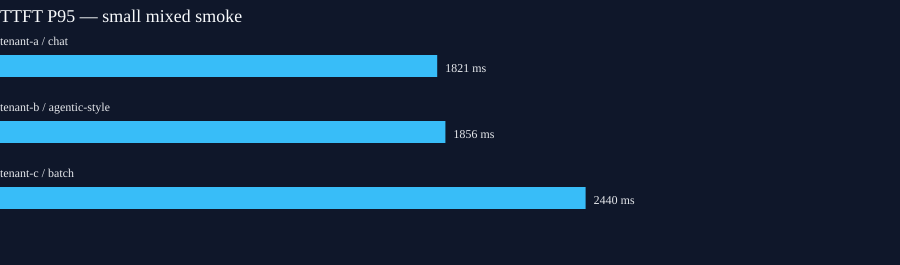

Run pilot-text-20261013-012123 · 2026-10-13T01:21:29.781244Z – 2026-10-13T01:22:38.014418Z
This is an interim, low-sample validation of three synthetic tenants through two llm-d-routed GPU replicas. It is not the nominal SLO campaign.
| Tenant | Class | Completed | TTFT P95 ms | TPOT P95 ms | E2E P95 ms | Output tok/s | Tenant estimate USD* |
|---|---|---|---|---|---|---|---|
| tenant-a | chat | 17 | 1821.46 | 21.92 | 5600.79 | 53.76 | 0.022043 |
| tenant-b | agentic-style | 25 | 1855.84 | 19.11 | 10303.8 | 59.09 | 0.028278 |
| tenant-c | batch | 4 | 2440.16 | 18.37 | 18483.54 | 128.73 | 0.017989 |
*Illustrative output-token-share of allocated infrastructure cost; not an invoice or measured per-tenant usage.

Verified fleet rental: $2.0474/hour. Exact 2026-10-13T01:21:00Z,2026-10-13T01:23:00Z audit $0.068247; OpenCost idle-inclusive allocation $0.068310; difference 0.092%.
Open exact-window Grafana dashboard (requires local port-forward). JSON · CSV · Reproducibility.